Section 1.2: Scene to Retinal Image
The Light Field
Leonardo da Vinci (1509): A pinhole camera forms an image wherever you place it.
→ Light rays must fill all of space, traveling in all directions!
Gershun (1939) formalized this as the light field:
\[LF(x, y, z, \alpha, \beta, \lambda, \rho)\]
| x, y, z |
Position in space |
| α, β |
Direction of ray |
| λ |
Wavelength |
| ρ |
Polarization |
Visualizing the Light Field
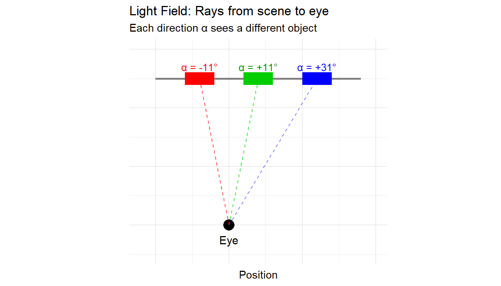
Light field query: “At position (x,y), looking in direction α, what wavelength λ do I see?”
From Light Field to Retinal Image
The eye captures only rays entering the pupil → Incident Light Field
\[ILF(u, v, \alpha, \beta, \lambda, t)\]
The lens focuses rays onto retina → Retinal Spectral Irradiance
\[E(r_x, r_y, \lambda, t)\]
| Light Field |
7D |
x,y,z,α,β,λ,ρ |
| Incident Light Field |
7D |
u,v,α,β,λ,ρ,t |
| Retinal Image |
4D |
rx,ry,λ,t |
| Cone Response |
3 numbers! |
L, M, S |
Massive dimensionality reduction!
What Gets Lost? (1) Optical Blur
The lens + diffraction blur the image before it reaches the retina:

Fine details are lost — the eye has limited spatial resolution!
What Gets Lost? (2) Cone Sampling
Continuous retinal image → discrete cone mosaic samples:
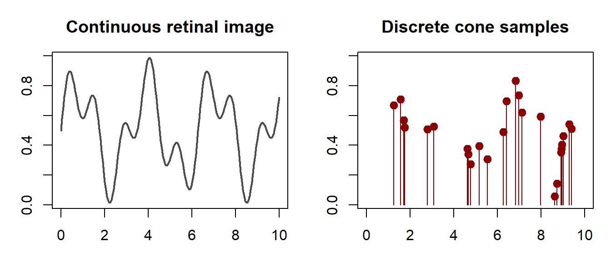
Spatial information between cones is lost forever!
What Gets Lost? (3) Spectral Compression
Light has infinite wavelengths (400-700nm continuous spectrum).
But we have only 3 cone types → compressed to 3 numbers!
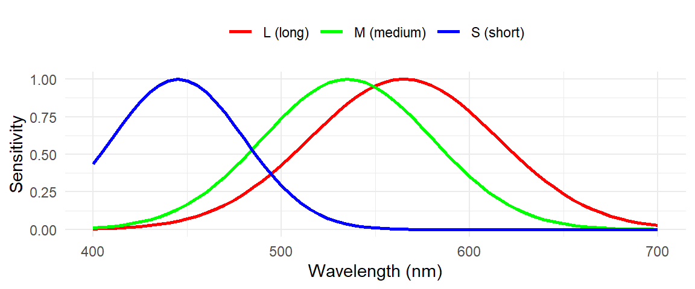
∞ dimensions → 3 dimensions = information loss = ambiguity
Bayesian Inference: The Brain’s Solution
Problem: Same cone response can come from many different scenes!
Solution: Combine sensory evidence with prior knowledge:
\[P(\text{scene} | \text{cones}) \propto \underbrace{P(\text{cones} | \text{scene})}_{\text{likelihood}} \times \underbrace{P(\text{scene})}_{\text{prior}}\]
| Likelihood |
“How well does this scene explain my cone signals?” |
| Prior |
“How common is this scene in my experience?” |
| Posterior |
“What scene should I perceive?” |
Result: Brain picks the scene that best explains the data AND is plausible given past experience.
Section 1.3: Mathematical Principles
How Cones Compute Their Response
\[N = \int C(\lambda) \cdot E(\lambda) \, d\lambda = \text{weighted sum of light}\]
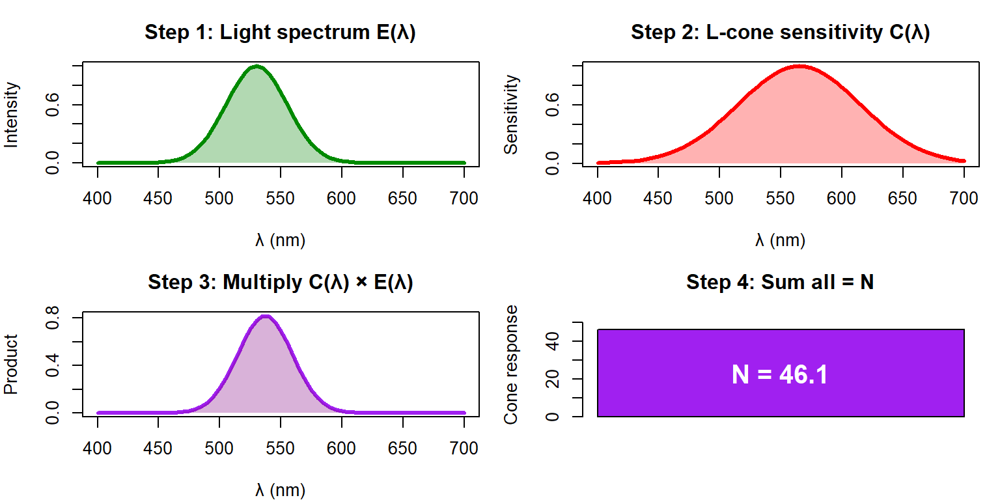
Result: One number N = how strongly this cone responds to this light!
Matrix Multiplication: Step by Step
Row × Column = one number:
\[n_L = [0.1, 0.3, 0.7, 1.0, 0.8] \cdot \begin{bmatrix} 0.0 \\ 0.2 \\ 0.8 \\ 1.0 \\ 0.4 \end{bmatrix}\]
\[n_L = (0.1 \times 0.0) + (0.3 \times 0.2) + (0.7 \times 0.8) + (1.0 \times 1.0) + (0.8 \times 0.4)\]
\[n_L = 0 + 0.06 + 0.56 + 1.0 + 0.32 = \mathbf{1.94}\]
Same for M and S → final result: \(\mathbf{n} = [1.94, 1.24, 0.06]^T\)
Principle of Univariance
“The output of a receptor depends upon its quantum catch, but not upon what quanta are caught.” — Rushton (1972)
Translation: A cone reports HOW MANY photons, not WHAT COLOR they were.

Same response! Once absorbed, wavelength information is lost forever.
Why Univariance Matters
A single cone is color-blind. To see color, compare L, M, S:
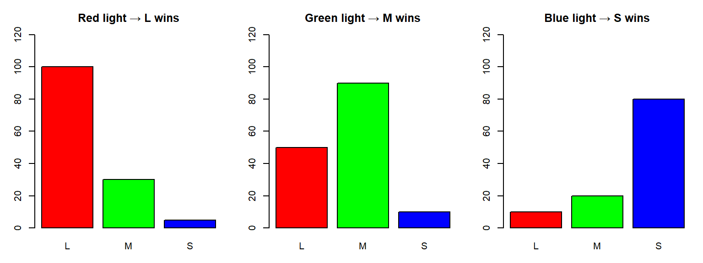
Color = pattern of L, M, S responses, not any single cone’s output!
Why Are Cone Responses Noisy?
Photons arrive randomly — like raindrops falling on a bucket.
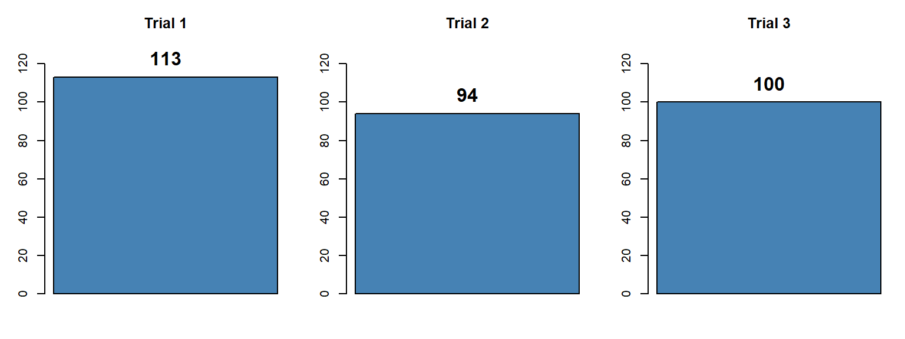
Same light source (mean = 100), but each measurement is different!
This randomness follows a Poisson distribution.
Poisson Distribution: Shape Depends on Mean

Key insight: Variance = Mean
| 10 |
10 |
√10 ≈ 3.2 |
Narrow |
| 100 |
100 |
√100 = 10 |
Wider |
More photons → wider distribution → but relative noise (SD/mean) gets smaller!
Poisson vs Gaussian
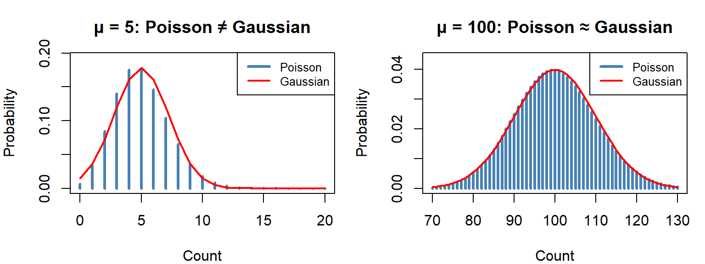
| Parameters |
μ only (variance = μ) |
μ and σ² (independent) |
| Values |
Integers ≥ 0 |
Any real number |
| Use for |
Counting (photons!) |
Continuous measurements |
| When similar? |
When μ > ~30 |
— |
What is Shift-Invariance?
Question: If I move a dot across my visual field, does it stay the same shape?
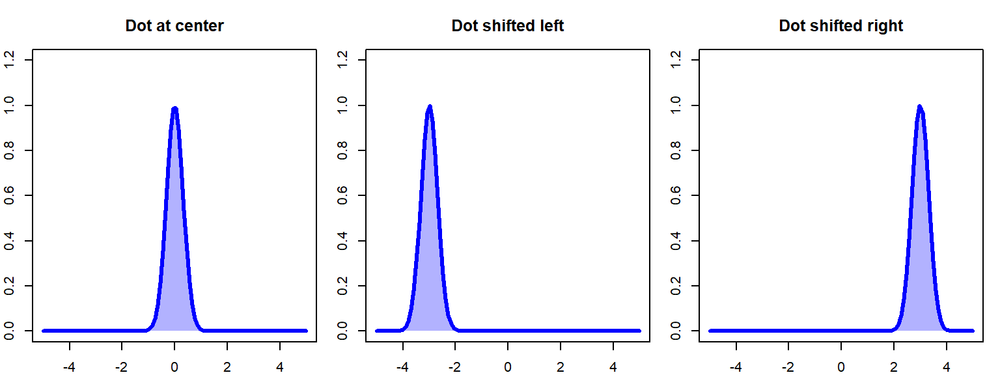
Shift-invariant: Same blur happens everywhere → shift input = shift output (same shape).
Point Spread Function (PSF)
The PSF tells us: “What does a single point of light look like after passing through the eye?”
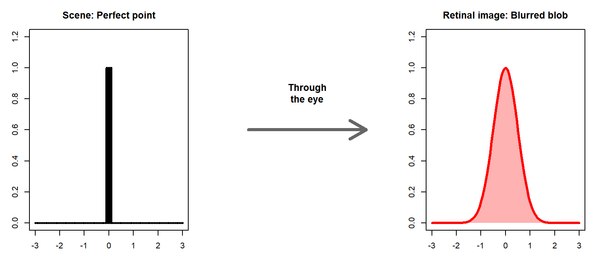
PSF = the “blur kernel” — the lens + diffraction spreads a perfect point into a blob.
What is Convolution?
Convolution = “slide the PSF across every point in the image and add up”
Think of it as stamping the PSF at every bright location:

Convolution = sum of all the “stamps”
Convolution in Action: Edge Blur
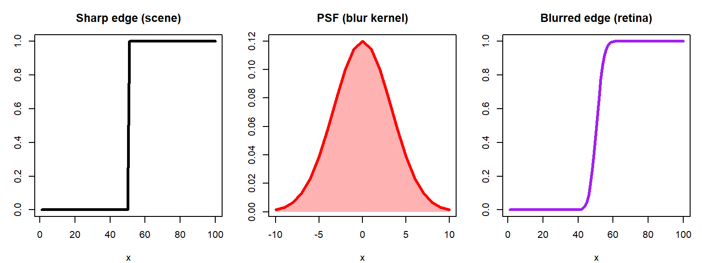
Sharp edge + blur kernel = soft gradient — this is why we can’t see infinitely fine detail!
Reality Check: The Eye is NOT Perfectly Shift-Invariant
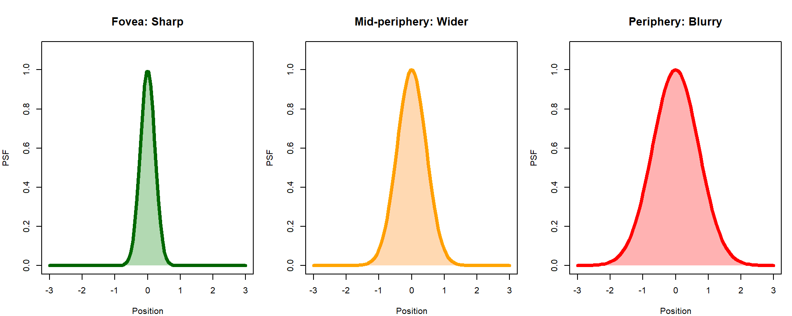
Varies with: eccentricity, wavelength (chromatic aberration), pupil size
Consequence: Convolution works locally → need computational models (ISETBio) for full accuracy.
Section 1.4: Computational Model
Why We Need Computational Models
Math formulas work for one location. But the real eye varies everywhere!
| PSF (blur) |
Small, sharp |
Large, blurry |
| Cone density |
~200,000/mm² |
~10,000/mm² |
| Cone aperture |
Small |
Large |
| S-cones |
None! |
Present |
“There is little value in expressing the full complexity of these calculations in pure mathematical form.” — Wandell & Brainard
Solution: Computational modeling with ISETBio (free, open-source)
The Fovea-Periphery Trade-off
| Cone density |
High (~200k/mm²) |
Low (~10k/mm²) |
| Cone aperture |
Small |
Large |
| Excitations/cone |
Fewer |
More (larger apertures!) |
| Spatial resolution |
High |
Low |
| Color vision |
Dichromatic (L, M only) |
Trichromatic (L, M, S) |
Why?
- Fovea: Optimized for fine detail, reading, recognition
- Periphery: Optimized for detecting motion, threats (sensitivity over resolution)
Spatial Derivatives: What Neurons Compute
Neurons don’t report absolute light — they compute local changes (derivatives):
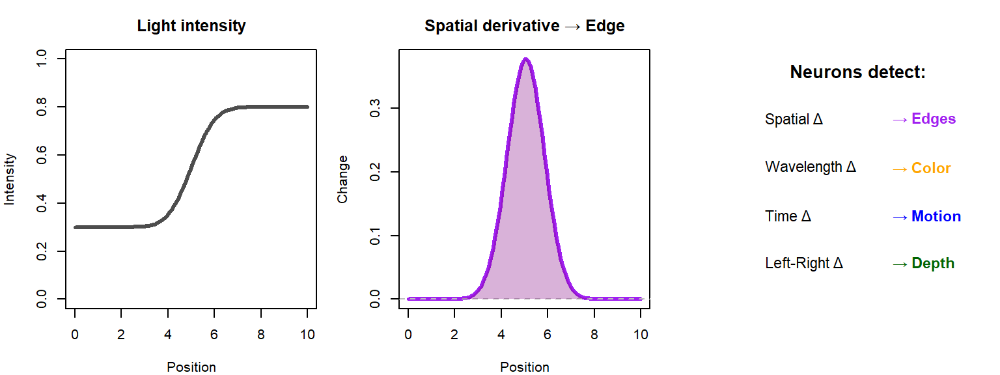
Why derivatives? Local contrast matters more than absolute brightness. Also highly compressible (most derivatives ≈ 0 in natural scenes).
Part 1 Summary: Forward Calculation Complete
Scene → Optics → Cone Mosaic → Cone Excitations
| Optics |
Light blurred by PSF |
Convolution (locally) |
| Cone sampling |
Continuous → discrete |
Matrix multiplication |
| Cone response |
Photons counted |
Linear + Poisson noise |
| Neural coding |
Local differences |
Derivatives |
Key insight: Massive information loss at every stage!
- ∞ wavelengths → 3 cone types
- Continuous image → discrete samples
- Exact photon count → noisy estimate
The brain receives ambiguous, noisy signals. How does it perceive the world?
→ Part 2: Perceptual Inference (Bayesian approach)